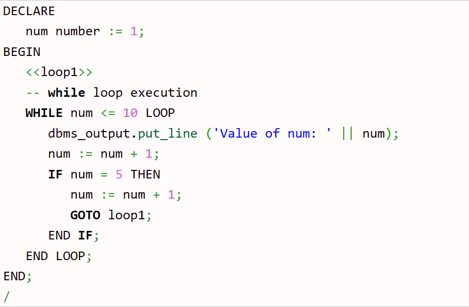
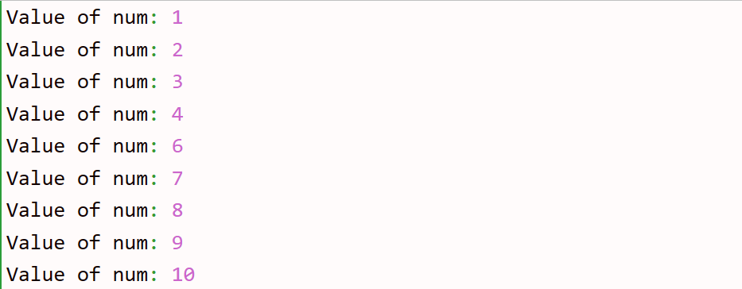

Pl sql goto statement:
The pl sql goto statement provides an unconditional jump from the GOTO to a labeled statement in the same subprogram. A label can be declare with the << label>> syntax.
pl sql goto statement syntax:
GOTO label_name;
//Other statements
< < label_name> >
Statement;
Pl sql goto statement example:
Output:
Pl sql goto statement restrictions:
1. GOTO statement cannot transfer control into an IF statement, CASE statement, LOOP statement or
sub-block.
2. GOTO statement cannot transfer control from one IF statement clause to another or from one CASE
statement WHEN clause to another.
3. GOTO statement cannot transfer control from an outer block into a sub-block.
4. GOTO statement cannot transfer control out of a subprogram.
5. GOTO statement cannot transfer control into an exception handler.